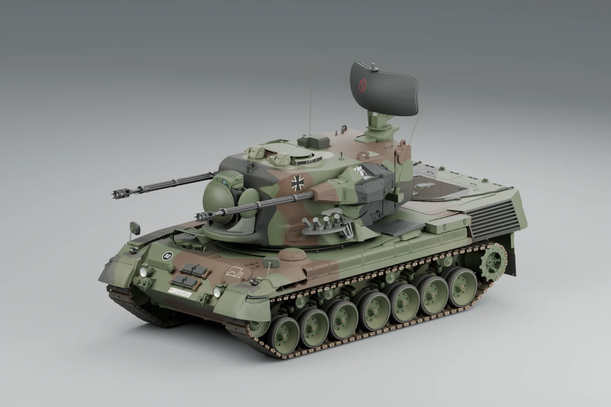

Blender game art / Material02
Gepard 1A2
Three-color camouflage, satin-painted fenders and subtle wear across the wheel dishes. Compare the Base and Equipped variants under matched studio lighting.

Base
The clear rear deck leaves the camouflage pattern and deck profile in view.
Drag or swipe to rotate. Use the arrow keys when the image is focused.


Equipped
Two roof cases, a rear stowage chest and an amber beacon change the silhouette.
Drag or swipe to rotate. Use the arrow keys when the image is focused.


Surface details

1. Locker recess
The surrounding paint color carries into the latch pocket.

2. Wheel dish
Small shifts in the enamel finish catch light across the lower bowl.

3. Front fender
Raking light picks out sparse scuffs in the satin paint.

4. Roof case
The hinge and lid edge break up the Equipped roof profile.
Turntables
Two silent, six-second camera orbits around the stationary artwork.
Base
The orbit shows how the camouflage wraps around the clear rear deck.
Equipped
The roof cases, beacon and rear chest come into view from different angles.